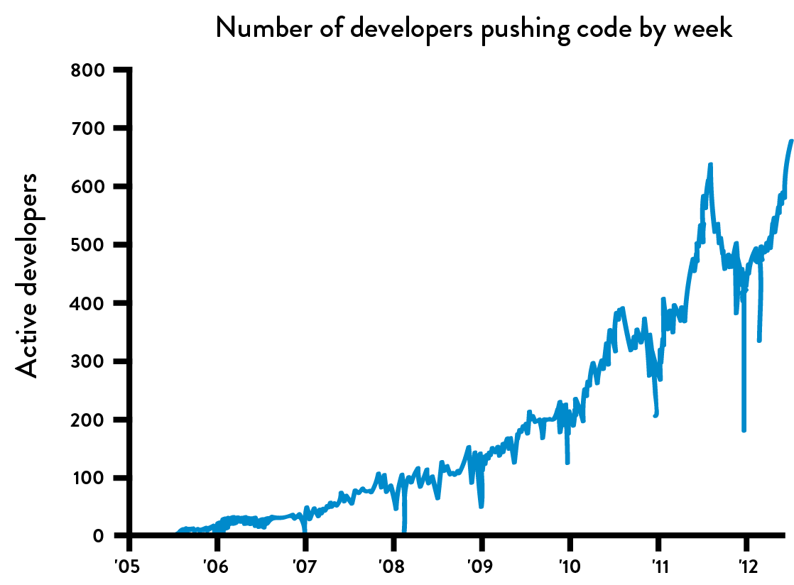
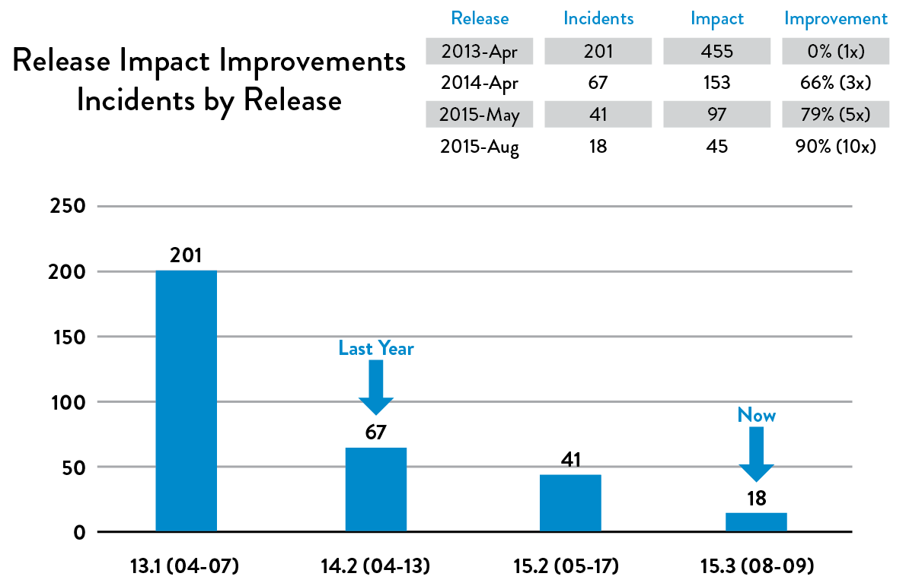
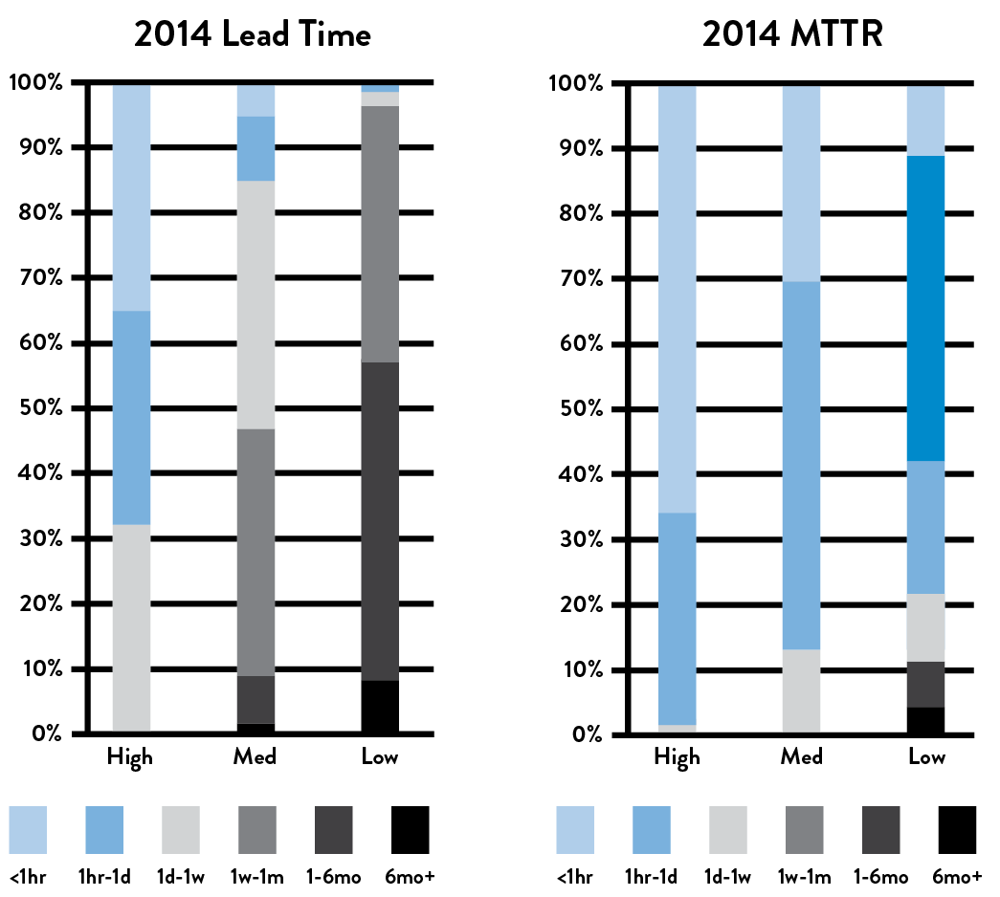
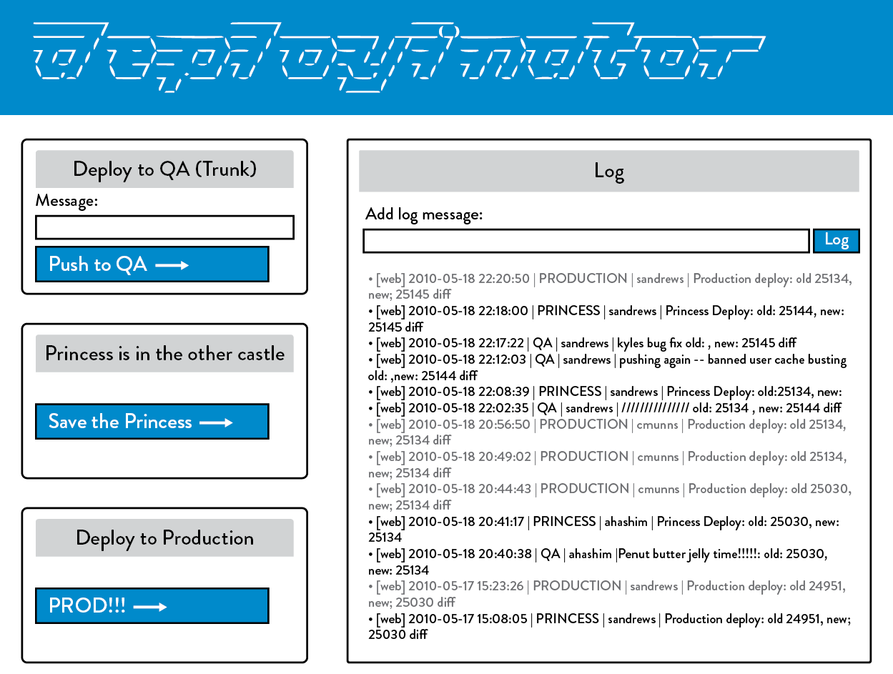
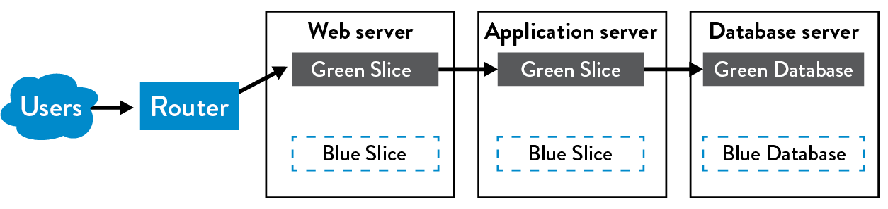
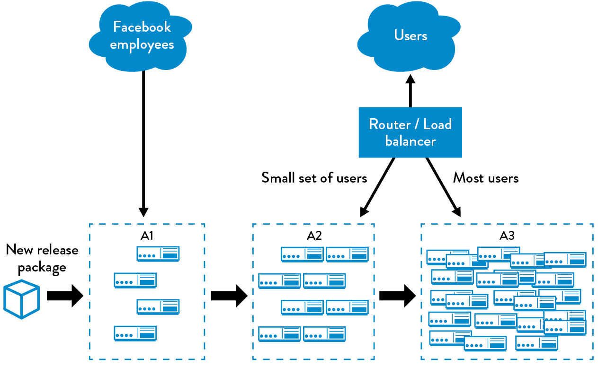

12Automate and Enable Low-Risk Releases
Chuck Rossi is the director of release engineering at Facebook. One of his responsibilities is overseeing the daily code push. In 2012, Rossi described their process as follows: “Starting around 1 p.m., I switch over to ‘operations mode’ and work with my team to get ready to launch the changes that are going out to Facebook.com that day. This is the more stressful part of the job and really relies heavily on my team’s judgment and past experience. We work to make sure that everyone who has changes going out is accounted for and is actively testing and supporting their changes.”
Just prior to the production push, all developers with changes going out must be present and check in on their IRC chat channel—any developers not present have their changes automatically removed from the deployment package. Rossi continued, “If everything looks good and our test dashboards and canary tests† are green, we push the big red button and the entire Facebook.com server fleet gets the new code delivered. Within twenty minutes, thousands and thousands of machines are up on new code with no visible impact to the people using the site.”‡
Later that year, Rossi doubled their software release frequency to twice daily. He explained that the second code push gave engineers not on the US West Coast the ability to “move and ship as quickly as any other engineer in the company,” and also gave everyone a second opportunity each day to ship code and launch features.
 Figure 16: Number of developers deploying per week at Facebook
(Source: Chuck Rossi, “Ship early and ship twice as often.”)
Kent Beck, the creator of the Extreme Programming methodology, one of the leading proponents of Test Driven Development, and technical coach at Facebook, further comments on the their code release strategy in an article posted on his Facebook page: “Chuck Rossi made the observation that there seem to be a fixed number of changes Facebook can handle in one deployment. If we want more changes, we need more deployments. This has led to a steady increase in deployment pace over the past five years, from weekly to daily to thrice daily deployments of our PHP code and from six to four to two week cycles for deploying our mobile apps. This improvement has been driven primarily by the release engineering team.”
By using continuous integration and making code deployment a low-risk process, Facebook has enabled code deployment to be a part of everyone’s daily work and sustain developer productivity. This requires that code deployment be automated, repeatable, and predictable. In the practices described in the book so far, even though our code and environments have been tested together, most likely we are not deploying to production very often because deployments are manual, time-consuming, painful, tedious, and error-prone, and they often involve an inconvenient and unreliable handoff between Development and Operations.
And because it is painful, we tend to do it less and less frequently, resulting in another self-reinforcing downward spiral. By deferring production deployments, we accumulate ever-larger differences between the code to be deployed and what’s running in production, increasing the deployment batch size. As deployment batch size grows, so does the risk of unexpected outcomes associated with the change, as well as the difficulty fixing them.
In this chapter, we reduce the friction associated with production deployments, ensuring that they can be performed frequently and easily, either by Operations or Development. We do this by extending our deployment pipeline.
Instead, of merely continually integrating our code in a production-like environment, we will enable the promotion into production of any build that passes our automated test and validation process, either on demand (i.e., at the push of a button) or automatically (i.e., any build that passes all the tests is automatically deployed).
Because of the number of practices presented, extensive footnotes are provided with numerous examples and additional information, without interrupting the presentation of concepts in the chapter.
AUTOMATE OUR DEPLOYMENT PROCESS
Achieving outcomes like those at Facebook requires that we have an automated mechanism that deploys our code into production. Especially if we have a deployment process that has existed for years, we need to fully document the steps in the deployment process, such as in a value stream mapping exercise, which we can assemble in a workshop or document incrementally (e.g., in a wiki).
Once we have the process documented, our goal is to simplify and automate as many of the manual steps as possible, such as:
- Packaging code in ways suitable for deployment
- Creating pre-configured virtual machine images or containers
- Automating the deployment and configuration of middleware
- Copying packages or files onto production servers
- Restarting servers, applications, or services
- Generating configuration files from templates
- Running automated smoke tests to make sure the system is working and correctly configured
- Running testing procedures
- Scripting and automating database migrations
Where possible, we will re-architect to remove steps, particularly those that take a long time to complete. We also want to not only reduce our lead times but also the number of handoffs as much as possible in order to reduce errors and loss of knowledge.
Having developers focus on automating and optimizing the deployment process can lead to significant improvements in deployment flow, such as ensuring that small application configuration changes no longer need new deployments or new environments.
However, this requires that Development works closely with Operations to ensure that all the tools and processes we co-create can be used downstream, as opposed to alienating Operations or reinventing the wheel.
Many tools that provide continuous integration and testing also support the ability to extend the deployment pipeline so that validated builds can be promoted into production, typically after the production acceptance tests are performed (e.g., the Jenkins Build Pipeline plugin, ThoughtWorks Go.cd and Snap CI, Microsoft Visual Studio Team Services, and Pivotal Concourse).
The requirements for our deployment pipeline include:
- Deploying the same way to every environment: By using the same deployment mechanism for every environment (e.g., development, test, and production), our production deployments are likely to be far more successful, since we know that it has been successfully performed many times already earlier in the pipeline.
- Smoke testing our deployments: During the deployment process, we should test that we can connect to any supporting systems (e.g., databases, message buses, external services) and run a single test transaction through the system to ensure that our system is performing as designed. If any of these tests fail, we should fail the deployment.
- Ensure we maintain consistent environments: In previous steps, we created a single-step environment build process so that the development, test, and production environments had a common build mechanism. We must continually ensure that these environments remain synchronized.
Of course, when any problems occur during deployment, we pull the Andon cord and swarm the problem until the problem is resolved, just as we do when our deployment pipeline fails in any of the earlier steps.
Case Study
Daily Deployments at CSG International (2013)
CSG International runs one of the largest bill printing operations in the US. Scott Prugh, their chief architect and VP of Development, in an effort to improve the predictability and reliability of their software releases, doubled their release frequency from two per year to four per year (halving their deployment interval from twenty-eight weeks to fourteen weeks).
Although the Development teams were using continuous integration to deploy their code into test environments daily, the production releases were being performed by the Operations team. Prugh observed, “It was as if we had a ‘practice team’ that practiced daily (or even more frequently) in low-risk test environments, perfecting their processes and tools. But our production ‘game team’ got very few attempts to practice, only twice per year. Worse, they were practicing in the high-risk production environments, which were often very different than the pre-production environments with different constraints—the development environments were missing many production assets such as security, firewalls, load balancers, and a SAN.”
To solve this problem, they created a Shared Operations Team (SOT) that was responsible for managing all the environments (development, test, production) performing daily deployments into those development and test environments, as well as doing production deployments and releases every fourteen weeks. Because the SOT was doing deployments every day, any problems they encountered that were left unfixed would simply occur again the next day. This created tremendous motivation to automate tedious or error-prone manual steps and to fix any issues that could potentially happen again. Because the deployments were performed nearly one hundred times before the production release, most problems were found and fixed long before then.
Doing this revealed problems that were previously only experienced by the Ops team, which were then problems for the entire value stream to solve. The daily deployments enabled daily feedback on which practices worked and which didn’t.
They also focused on making all their environments look as similar as possible, including the restricted security access rights and load balancers. Prugh writes, “We made non-production environments as similar to production as possible, and we sought to emulate production constraints in as many ways as possible. Early exposure to production-class environments altered the designs of the architecture to make them friendlier in these constrained or different environments. Everyone gets smarter from this approach.”
Prugh also observes:
“We have experienced many cases where changes to database schemas are either 1) handed off to a DBA team for them to ‘go and figure it out’ or 2) automated tests that run on unrealistically small data sets (i.e., “100’s of MB vs. 100’s of GBs”), which led to production failures. In our old way of working, this would become a late-night blame game between teams trying to unwind the mess. We created a development and deployment process that removed the need for handoffs to DBAs by cross-training developers, automating schema changes, and executing them daily. We created realistic load testing against sanitized customer data, ideally running migrations every day. By doing this, we run our service hundreds of times with realistic scenarios before seeing actual production traffic.”§
Their results were astonishing. By doing daily deployments and doubling the frequency of production releases, the number of production incidents went down by 91%, MTTR went down by 80%, and the deployment lead time required for the service to run in production in a “fully hands-off state” went from fourteen days to one day.
Prugh reported that deployments became so routine that the Ops team was playing video games by the end of the first day. In addition to deployments going more smoothly for Dev and Ops, in 50% of the cases the customer received the value in half the time, underscoring how more frequent deployments can be good for Development, QA, Operations, and the customer.
 Figure 17: Daily deployments and increasing release frequency resulted in decrease in # of production incidents and MTTR (Source: “DOES15 - Scott Prugh & Erica Morrison - Conway & Taylor Meet the Strangler (v2.0),” YouTube video, 29:39, posted by DevOps Enterprise Summit, November 5, 2015, https://www.youtube.com/watch?v=tKdIHCL0DUg.)
ENABLE AUTOMATED SELF-SERVICE DEPLOYMENTS
Consider the following quote from Tim Tischler, Director of Operations Automation at Nike, Inc., that describes the common experience of a generation of developers: “As a developer, there has never been a more satisfying point in my career than when I wrote the code, when I pushed the button to deploy it, when I could see the production metrics confirm that it actually worked in production, and when I could fix it myself if it didn’t.”
Developers’ ability to self-deploy code into production, to quickly see happy customers when their feature works, and to quickly fix any issues without having to open up a ticket with Operations has diminished over the last decade—in part as a result of a need for control and oversight, perhaps driven by security and compliance requirements.
The resulting common practice is for Operations to perform code deployments, because separation of duties is a widely accepted practice to reduce the risk of production outages and fraud. However, to achieve DevOps outcomes, our goal is to shift our reliance to other control mechanisms that can mitigate these risks equally or even more effectively, such as through automated testing, automated deployment, and peer review of changes.
The Puppet Labs’ 2013 State of DevOps Report, which surveyed over four thousand technology professionals, found that there was no statistically significant difference in the change success rates between organizations where Development deployed code and those where Operations deployed code.
In other words, when there are shared goals that span Development and Operations, and there is transparency, responsibility, and accountability for deployment outcomes, it doesn’t matter who performs the deployment. In fact, we may even have other roles, such as testers or project managers, able to deploy to certain environments so they can get their own work done quickly, such as setting up demonstrations of specific features in test or UAT environments.
To better enable fast flow, we want a code promotion process that can be performed by either Development or Operations, ideally without any manual steps or handoffs. This affects the following steps:
- Build: Our deployment pipeline must create packages from version control that can be deployed to any environment, including production.
- Test: Anyone should be able to run any or all of our automated test suite on their workstation or on our test systems.
- Deploy: Anybody should be able to deploy these packages to any environment where they have access, executed by running scripts that are also checked in to version control.
These are the practices that enable deployments to be performed successfully, regardless of who is performing the deployment.
INTEGRATE CODE DEPLOYMENT INTO THE DEPLOYMENT PIPELINE
Once the code deployment process is automated, we can make it part of the deployment pipeline. Consequently, our deployment automation must provide the following capabilities:
- Ensure that packages created during the continuous integration process are suitable for deployment into production
- Show the readiness of production environments at a glance
- Provide a push-button, self-service method for any suitable version of the packaged code to be deployed into production
- Record automatically, for auditing and compliance purposes, which commands were run on which machines when, who authorized it, and what the output was
- Run a smoke test to ensure the system is operating correctly and the configuration settings, including items such as database connection strings, are correct
- Provide fast feedback for the deployer so they can quickly determine whether their deployment was successful (e.g., did the deployment succeed, is the application performing as expected in production, etc.)
Our goal is ensure that deployments are fast—we don’t want to have to wait hours to determine whether our code deployment succeeded or failed and then need hours to deploy any needed code fixes. Now that we have technologies such as containers, it is possible to complete even the most complex deployments in seconds or minutes. In Puppet Labs’ 2014 State of DevOps Report, the data showed that high performers had deployment lead times measured in minutes or hours, while the lowest performers had deployment lead times measured in months.
 Figure 18: High performers had much faster deployment lead times and much faster time to restore production service after incidents (Source: Puppet Labs, 2014 State of DevOps Report.)
By building this capability, we now have a “deploy code” button that allows us to safely and quickly promote changes to our code and our environments into production through our deployment pipeline.
Case Study
Etsy—Self-Service Developer Deployment, an Example of Continuous Deployment (2014)
Unlike at Facebook where deployments are managed by release engineers, at Etsy deployments are performed by anyone who wants to perform a deployment, such as Development, Operations, or Infosec. The deployment process at Etsy has become so safe and routine that new engineers will perform a production deployment on their first day at work—as have Etsy board members and even dogs!
As Noah Sussman, a test architect at Etsy, wrote, “By the time 8am rolls around on a normal business day, 15 or so people and dogs are starting to queue up, all of them expecting to collectively deploy up to 25 changesets before the day is done.”
Engineers who want to deploy their code first go to a chat room, where engineers add themselves to the deploy queue, see the deployment activity in progress, see who else is in the queue, broadcast their activities, and get help from other engineers when they need it. When it’s an engineer’s turn to deploy, they are notified in the chat room.
The goal at Etsy has been to make it easy and safe to deploy into production with the fewest number of steps and the least amount of ceremony. Likely before the developer even checks in code, they will run on their workstation all 4,500 unit tests, which takes less than one minute. All calls to external systems, such as databases, have been stubbed out.
After they check their changes in to trunk in version control, over seven thousand automated trunk tests are instantly run on their continuous integration (CI) servers. Sussman writes, “Through trial-and-error, we’ve settled on about 11 minutes as the longest that the automated tests can run during a push. That leaves time to re-run the tests once during a deployment [if someone breaks something and needs to fix it], without going too far past the 20 minute time limit.”
If all the tests were run sequentially, Sussman states that “the 7,000 trunk tests would take about half an hour to execute. So we split these tests up into subsets, and distribute those onto the 10 machines in our Jenkins [CI] cluster....Splitting up our test suite and running many tests in parallel, gives us the desired 11 minute runtime.”
 Figure 19: The Deployinator console at Etsy (Source: Erik Kastner, “Quantum of Deployment,” CodeasCraft.com, May 20, 2010, https://codeascraft.com/2010/05/20/quantum-of-deployment/.)
The next tests to run are the smoke tests, which are system level tests that run cURL to execute PHPUnit test cases. Following these tests, the functional tests are run, which execute end-to-end GUI-driven tests on a live server—this server is either their QA environment or staging environment (nicknamed “Princess”), which is actually a production server that has been taken out of rotation, ensuring that it exactly matches the production environment.
Once it is an engineer’s turn to deploy, Erik Kastner writes, “you go to Deployinator [an internally developed tool, see figure 19] and push the button to get it on QA. From there it visits Princess....Then, when it’s ready to go live, you hit the “Prod” button and soon your code is live, and everyone in IRC [chat channel] knows who pushed what code, complete with a link to the diff. For anyone not on IRC, there’s the email that everyone gets with the same information.”
In 2009, the deployment process at Etsy was a cause of stress and fear. By 2011, it had become a routine operation, happening twenty-five to fifty times per day, helping engineers get their code quickly into production, delivering value to their customers.
DECOUPLE DEPLOYMENTS FROM RELEASES
In the traditional launch of a software project, releases are driven by our marketing launch date. On the prior evening, we deploy our completed software (or as close to complete as we could get) into production. The next morning, we announce our new capabilities to the world, start taking orders, deliver the new functionality to customer, etc.
However, all too often things don’t go according to plan. We may experience production loads that we never tested or designed for, causing our service to fail spectacularly, both for our customers and our organization. Worse, restoring service may require a painful rollback process or an equally risky fix forward operation, where we make changes directly in production, this can all be a truly miserable experience for workers. When everything is finally working, everyone breathes a sigh of relief, grateful that production deployments and releases don’t happen more often.
Of course, we know that we need to be deploying more frequently to achieve our desired outcome of smooth and fast flow, not less frequently. To enable this, we need to decouple our production deployments from our feature releases. In practice, the terms deployment and release are often used interchangeably. However, they are two distinct actions that serve two very different purposes:
- Deployment is the installation of a specified version of software to a given environment (e.g., deploying code into an integration test environment or deploying code into production). Specifically, a deployment may or may not be associated with a release of a feature to customers.
- Release is when we make a feature (or set of features) available to all our customers or a segment of customers (e.g., we enable the feature to be used by 5% of our customer base). Our code and environments should be architected in such a way that the release of functionality does not require changing our application code.¶
In other words, when we conflate deployment and release, it makes it difficult to create accountability for successful outcomes—decoupling these two activities allows us to empower Development and Operations to be responsible for the success of fast and frequent deployments, while enabling product owners to be responsible for the successful business outcomes of the release (i.e., was building and launching the feature worth our time).
The practices described so far in this book ensure that we are doing fast and frequent production deployments throughout feature development, with the goal of reducing the risk and impact of deployment errors. The remaining risk is release risk, which is whether the features we put into production achieve the desired customer and business outcomes.
If we have extremely long deployment lead times, this dictates how frequently we can release new features to the marketplace. However, as we become able to deploy on demand, how quickly we expose new functionality to customers becomes a business and marketing decision, not a technical decision. There are two broad categories of release patterns we can use:
- Environment-based release patterns: This is where we have two or more environments that we deploy into, but only one environment is receiving live customer traffic (e.g., by configuring our load balancers). New code is deployed into a non-live environment, and the release is performed moving traffic to this environment. These are extremely powerful patterns, because they typically require little or no change to our applications. These patterns include blue-green deployments, canary releases, and cluster immune systems, all of which will be discussed shortly.
- Application-based release patterns: This is where we modify our application so that we can selectively release and expose specific application functionality by small configuration changes. For instance, we can implement feature flags that progressively expose new functionality in production to the development team, all internal employees, 1% of our customers, or, when we are confident that the release will operate as designed, our entire customer base. As discussed earlier, this enables a technique called dark launching, where we stage all the functionality to be launched in production and test it with production traffic before our release. For instance, we may invisibly test our new functionality with production traffic for weeks before our launch in order to expose problems so that they can be fixed before our actual launch.
ENVIRONMENT-BASED RELEASE PATTERNS
Decoupling deployments from our releases dramatically changes how we work. We no longer have to perform deployments in the middle of the night or on weekends to lower the risk of negatively impacting customers. Instead, we can do deployments during typical business hours, enabling Ops to finally have normal working hours, just like everyone else.
This section focuses on environment-based release patterns, which require no changes to application code. We do this by having multiple environments to deploy into, but only one of them receives live customer traffic. By doing this, we can significantly decrease the risk associated with production releases and reduce the deployment lead time.
The Blue-Green Deployment Pattern
The simplest of the three patterns is called blue-green deployment. In this pattern, we have two production environments: blue and green. At any time, only one of these is serving customer traffic—in figure 20, the green environment is live.
 Figure 20: Blue-green deployment patterns (Source: Humble and North, Continuous Delivery, 261.)
To release a new version of our service, we deploy to the inactive environment where we can perform our testing without interrupting the user experience. When we are confident that everything is functioning as designed, we execute our release by directing traffic to the blue environment. Thus, blue becomes live and green becomes staging. Roll back is performed by sending customer traffic back to the green environment.**
The blue-green deployment pattern is simple, and it is extremely easy to retrofit onto existing systems. It also has incredible benefits, such as enabling the team to perform deployments during normal business hours and conduct simple changeovers (e.g., changing a router setting, changing a symlink) during off-peak times. This alone can dramatically improve the work conditions for the team performing the deployment.
Dealing with Database Changes
Having two versions of our application in production creates problems when they depend upon a common database—when the deployment requires database schema changes or adding, modifying, or deleting tables or columns, the database cannot support both versions of our application. There are two general approaches to solving this problem:
- Create two databases (i.e., a blue and green database): Each version—blue (old) and green (new)—of the application has its own database. During the release, we put the blue database into read-only mode, perform a backup of it, restore onto the green database, and finally switch traffic to the green environment. The problem with this pattern is that if we need to roll back to the blue version, we can potentially lose transactions if we don’t manually migrate them from the green version first.
- Decouple database changes from application changes: Instead of supporting two databases, we decouple the release of database changes from the release of application changes by doing two things: First, we make only additive changes to our database, we never mutate existing database objects, and second, we make no assumptions in our application about which database version will be in production. This is very different than how we’ve been traditionally trained to think about databases, where we avoid duplicating data. The process of Decoupling database changes from application changes was used by IMVU (among others) around 2009, enabling them to do fifty deployments per day, some of which required database changes.††
Case Study
Dixons Retail—Blue-Green Deployment for Point-Of-Sale System (2008)
Dan North and Dave Farley, co-authors of Continuous Delivery, were working on a project for Dixons Retail, a large British retailer involving thousands of point-of-sale (POS) systems that resided in hundreds of retail stores and operating under a number of different customer brands.
Although blue-green deployments are mostly associated with online web services, North and Farley used this pattern to significantly reduce the risk and changeover times for POS upgrades.
Traditionally, upgrading POS systems are a big bang, waterfall project: the POS clients and the centralized server are upgraded at the same time, which requires extensive downtime (often an entire weekend), as well as significant network bandwidth to push out the new client software to all the retail stores. When things don’t go entirely according to plan, it can be incredibly disruptive to store operations.
For this upgrade, there was not enough network bandwidth to upgrade all the POS systems simultaneously, which made the traditional strategy impossible. To solve this problem, they used the blue-green strategy and created two production versions of the centralized server software, enabling them to simultaneously support the old and new versions of the POS clients.
After they did this, weeks before the planned POS upgrade, they started sending out new versions of client POS software installers to the retail stores over the slow network links, deploying the new software onto the POS systems in an inactive state. Meanwhile, the old version kept running as normal.
When all the POS clients had everything staged for the upgrade (the upgraded client and server had tested together successfully, and new client software had been deployed to all clients), the store managers were empowered to decide when to release the new version.
Depending on their business needs, some managers wanted to use the new features immediately and released right away, while others wanted to wait. In either case, whether releasing features immediately or waiting, itwas significantly better for the managers than having the centralized IT department choose for them when the release would occur.
The result was a significantly smoother and faster release, higher satisfaction from the store managers, and far less disruption to store operations. Furthermore, this application of blue-green deployments to thick-client PC applications demonstrates how DevOps patterns can be universally applied to different technologies, often in very surprising ways but with the same fantastic outcomes.
The Canary and Cluster Immune System Release Patterns
The blue-green release pattern is easy to implement and can dramatically increase the safety of software releases. There are variants of this pattern that can further improve safety and deployment lead times using automation, but with the potential trade-off of additional complexity.
The canary release pattern automates the release process of promoting to successively larger and more critical environments as we confirm that the code is operating as designed.
The term canary release comes from the tradition of coal miners bringing caged canaries into mines to provide early detection of toxic levels of carbon monoxide. If there wastoo much gas in the cave, it would kill the canaries before it killed the miners, alerting them to evacuate.
In this pattern, when we perform a release, we monitor how the software in each environment is performing. When something appears to be going wrong, we roll back; otherwise, we deploy to the next environment.‡‡
Figure 21 shows the groups of environments Facebook created to support this release pattern:
- A1 group: Production servers that only serve internal employees
- A2 group: Production servers that only serve a small percentage of customers and are deployed when certain acceptance criteria have been met (either automated or manual)
- A3 group: The rest of the production servers, which are deployed after the software running in the A2 cluster meets certain acceptance criteria
 Figure 21: The canary release pattern (Source: Humble and Farley, Continuous Delivery, 263.)
The cluster immune system expands upon the canary release pattern by linking our production monitoring system with our release process and by automating the roll back of code when the user-facing performance of the production system deviates outside of a predefined expected range, such as when the conversion rates for new users drops below our historical norms of 15%–20%.
There are two significant benefits to this type of safeguard. First, we protect against defects that are hard to find through automated tests, such as a web page change that renders some critical page element invisible (e.g., CSS change). Second, we reduce the time required to detect and respond to the degraded performance created by our change.§§
APPLICATION-BASED PATTERNS TO ENABLE SAFER RELEASES
In the previous section, we created environment-based patterns that allowed us to decouple our deployments from our releases by using multiple environments and by switching between which environment was live, which can be entirely implemented at the infrastructure level.
In this section, we describe application-based release patterns that we can implement in our code, allowing even greater flexibility in how we safely release new features to our customer, often on a per-feature basis. Because application-based release patterns are implemented in the application, these require involvement from Development.
Implement Feature Toggles
The primary way we enable application-based release patterns is by implementing feature toggles, which provide us with the mechanism to selectively enable and disable features without requiring a production code deployment. Feature toggles can also control which features are visible and available to specific user segments (e.g., internal employees, segments of customers).
Feature toggles are usually implemented by wrapping application logic or UI elements with a conditional statement, where the feature is enabled or disabled based on a configuration setting stored somewhere. This can be as simple as an application configuration file (e.g., configuration files in JSON, XML), or it might be through a directory service or even a web service specifically designed to manage feature toggling.¶¶
Feature toggles also enable us to do the following:
- Roll back easily: Features that create problems or interruptions in production can be quickly and safely disabled by merely changing the feature toggle setting. This is especially valuable when deployments are infrequent—switching off one particular stakeholder’s features is usually much easier than rolling back an entire release.
- Gracefully degrade performance: When our service experiences extremely high loads that would normally require us to increase capacity or, worse, risk having our service fail in production, we can use feature toggles to reduce the quality of service. In other words, we can increase the number of users we serve by reducing the level of functionality delivered (e.g., reduce the number of customers who can access a certain feature, disable CPU-intensive features such as recommendations, etc.).
- Increase our resilience through a service-oriented architecture: If we have a feature that relies on another service that isn’t complete yet, we can still deploy our feature into production but hide it behind a feature toggle. When that service finally becomes available, we can toggle the feature on. Similarly, when a service we rely upon fails, we can turn off the feature to prevent calls to the downstream service while keeping the rest of the application running.
To ensure that we find errors in features wrapped in feature toggles, our automated acceptance tests should run with all feature toggles on. (We should also test that our feature toggling functionality works correctly too!)
Feature toggles enable the decoupling of code deployments and feature releases, later in the book we use feature toggles to enable hypothesis-driven development and A/B testing, furthering our ability to achieve our desired business outcomes.
Perform Dark Launches
Feature toggles allow us to deploy features into production without making them accessible to users, enabling a technique known as dark launching. This is where we deploy all the functionality into production and then perform testing of that functionality while it is still invisible to customers. For large or risky changes, we often do this for weeks before the production launch, enabling us to safely test with the anticipated production-like loads.
For instance, suppose we dark launch a new feature that poses significant release risk, such as new search features, account creation processes, or new database queries. After all the code is in production, keeping the new feature disabled, we may modify user session code to make calls to new functions—instead of displaying the results to the user, we simply log or discard the results.
For example, we may have 1% of our online users make invisible calls to a new feature scheduled to be launched to see how our new feature behaves under load. After we find and fix any problems, we progressively increase the simulated load by increasing the frequency and number of users exercising the new functionality. By doing this, we are able to safely simulate production-like loads, giving us confidence that our service will perform as it needs to.
Furthermore, when we launch a feature, we can progressively roll out the feature to small segments of customers, halting the release if any problems are found. That way, we minimize the number of customers who are given a feature only to have it taken away because we find a defect or are unable to maintain the required performance.
In 2009, when John Allspaw was VP of Operations at Flickr, he wrote to the Yahoo! executive management team about their dark launch process, saying that it “increases everyone’s confidence almost to the point of apathy, as far as fear of load-related issues are concerned. I have no idea how many code deploys there were made to production on any given day in the past 5 years...because for the most part I don’t care, because those changes made in production have such a low chance of causing issues. When they have caused issues, everyone on the Flickr staff can find on a webpage when the change was made, who made the change, and exactly (line-by-line) what the change was.”***
Later, when we have built adequate production telemetry in our application and environments, we can also enable faster feedback cycles to validate our business assumptions and outcomes immediately after we deploy the feature into production.
By doing this, we no longer wait until a big bang release to test whether customers want to use the functionality we build. Instead, by the time we announce and release our big feature, we have already tested our business hypotheses and run countless experiments to continually refine our product with real customers, which helps us validate that the features will achieve the desired customer outcomes.
Case Study
Dark Launch of Facebook Chat (2008)
For nearly a decade, Facebook has been one of the most widely visited Internet sites, as measured by pages viewed and unique site users. In 2008, it had over seventy million daily active users, which created a challenge for the team that was developing the new Facebook Chat functionality.†††
Eugene Letuchy, an engineer on the Chat team, wrote about how the number of concurrent users presented a huge software engineering challenge: “The most resource-intensive operation performed in a chat system is not sending messages. It is rather keeping each online user aware of the online-idle-offline states of their friends, so that conversations can begin.”
Implementing this computationally-intensive feature was one of the largest technical undertakings ever at Facebook and took almost a year to complete.‡‡‡ Part of the complexity of the project was due to the wide variety of technologies needed to achieve the desired performance, including C++, JavaScript, and PHP, as well as their first use of Erlang in their back-end infrastructure.
Throughout the course of the year-long endeavor, the Chat team checked their code in to version control, where it would be deployed into production at least once per day. At first, the Chat functionality was visible only to the Chat team. Later, it was made visible to all internal employees, but it was completely hidden from external Facebook users through Gatekeeper, the Facebook feature toggling service.
As part of their dark launch process, every Facebook user session, which runs JavaScript in the user browser, had a test harness loaded into it—the chat UI elements were hidden, but the browser client would send invisible test chat messages to the back-end chat service that was already in production, enabling them to simulate production-like loads throughout the entire project, allowing them to find and fix performance problems long before the customer release.
By doing this, every Facebook user was part of a massive load testing program, which enabled the team to gain confidence that their systems could handle realistic production-like loads. The Chat release and launch required only two steps: modifying the Gatekeeper configuration setting to make the Chat feature visible to some portion of external users, and having Facebook users load new JavaScript code that rendered the Chat UI and disabled the invisible test harness. If something went wrong, the two steps would be reversed. When the launch day of Facebook Chat arrived, it was surprisingly successful and uneventful, seeming to scale effortlessly from zero to seventy million users overnight. During the release, they incrementally enabled the chat functionality to ever-larger segments of the customer population—first to all internal Facebook employees, then to 1% of the customer population, then to 5%, and so forth. As Letuchy wrote, “The secret for going from zero to seventy million users overnight is to avoid doing it all in one fell swoop.”
SURVEY OF CONTINUOUS DELIVERY AND CONTINUOUS DEPLOYMENT IN PRACTICE
In Continuous Delivery, Jez Humble and David Farley define the term continuous delivery. The term continuous deployment was first mentioned by Tim Fitz in his blog post “Continuous Deployment at IMVU: Doing the impossible fifty times a day.” However, in 2015, during the construction of The DevOps Handbook, Jez Humble commented, “In the last five years, there has been confusion around the terms continuous delivery versus continuous deployment—and, indeed, my own thinking and definitions have changed since we wrote the book. Every organization should create their variations, based on what they need. The key thing we should care about is not the form, but the outcomes: deployments should be low-risk, push-button events we can perform on demand.”
His updated definitions of continuous delivery and continuous deployment are as follows:
When all developers are working in small batches on trunk, or everyone is working off trunk in short-lived feature branches that get merged to trunk regularly, and when trunk is always kept in a releasable state, and when we can release on demand at the push of a button during normal business hours, we are doing continuous delivery. Developers get fast feedback when they introduce any regression errors, which include defects, performance issues, security issues, usability issues, etc. When these issues are found, they are fixed immediately so that trunk is always deployable.
In addition to the above, when we are deploying good builds into production on a regular basis through self-service (being deployed by Dev or by Ops)—which typically means that we are deploying to production at least once per day per developer, or perhaps even automatically deploying every change a developer commits—this is when we are engaging in continuous deployment.
Defined this way, continuous delivery is the prerequisite for continuous deployment—just as continuous integration is a prerequisite for continuous delivery. Continuous deployment is likely applicable in the context of web services that are delivered online. However, continuous delivery is applicable in almost every context where we desire deployments and releases that have high quality, fast lead times and have highly predictable, low-risk outcomes, including for embedded systems, COTS products, and mobile apps.
At Amazon and Google, most teams practice continuous delivery, although some perform continuous deployment— thus, there is considerable variation between teams in how frequently they deploy code and how deployments are performed. Teams are empowered to choose how to deploy based on the risks they are managing. For example, the Google App Engine team often deploys once per day, while the Google Search property deploys several times per week.
Similarly, most of the cases studies presented in this book are also continuous delivery, such as the embedded software running on HP LaserJet printers, the CSG bill printing operations running on twenty technology platforms including a COBOL mainframe application, Facebook, and Etsy. These same patterns can be used for software that runs on mobile phones, ground control stations that control satellites, and so forth.
CONCLUSION
As the Facebook, Etsy, and CSG examples have shown, releases and deployments do not have to be high-risk, high-drama affairs that require tens or hundreds of engineers to work around the clock to complete. Instead, they can be made entirely routine and a part of everyone’s daily work.
By doing this, we can reduce our deployment lead times from months to minutes, allowing our organizations to quickly deliver value to our customer without causing chaos and disruption. Furthermore, by having Dev and Ops work together, we can finally make Operations work humane.

Table of contents
- Preface
- Foreword
- Imagine a World Where Dev and Ops Become DevOps
-
Part I The Three Ways
- A BRIEF HISTORY
- 1 Agile, Continuous Delivery, and the Three Ways
- 2 The First Way: The Principles of Flow
- 3 The Second Way: The Principles of Feedback
- 4 The Third Way: The Principles of Continual Learning and Experimentation
-
Part II Where to Start
- Introduction
- 5 Selecting Which Value Stream to Start With
- 6 Understanding the Work in Our Value Stream, Making it Visible, and Expanding it Across the Organization
-
7 How to Design Our Organization and Architecture with Conway’s Law in Mind
- ORGANIZATIONAL ARCHETYPES
- PROBLEMS OFTEN CAUSED BY OVERLY FUNCTIONAL ORIENTATION (“OPTIMIZING FOR COST”)
- ENABLE MARKET-ORIENTED TEAMS (“OPTIMIZING FOR SPEED”)
- MAKING FUNCTIONAL ORIENTATION WORK
- TESTING, OPERATIONS, AND SECURITY AS EVERYONE’S JOB, EVERY DAY
- ENABLE EVERY TEAM MEMBER TO BE A GENERALIST
- FUND NOT PROJECTS, BUT SERVICES AND PRODUCTS
- DESIGN TEAM BOUNDARIES IN ACCORDANCE WITH CONWAY’S LAW
- CREATE LOOSELY-COUPLED ARCHITECTURES TO ENABLE DEVELOPER PRODUCTIVITY AND SAFETY
- CONCLUSION
- 8 How to Get Great Outcomes by Integrating Operations into the Daily Work of Development
-
PART III—THE FIRST WAY: THE TECHNICAL PRACTICES OF FLOW
- 9 Create the Foundations of Our Deployment Pipeline
-
10 Enable Fast and Reliable Automated Testing
- CONTINUOUSLY BUILD, TEST, AND INTEGRATE OUR CODE AND ENVIRONMENTS
-
BUILD A FAST AND RELIABLE AUTOMATED VALIDATION TEST SUITE
- CATCH ERRORS AS EARLY IN OUR AUTOMATED TESTING AS POSSIBLE
- ENSURE TESTS RUN QUICKLY (IN PARALLEL, IF NECESSARY)
- WRITE OUR AUTOMATED TESTS BEFORE WE WRITE THE CODE (“TEST-DRIVEN DEVELOPMENT”)
- AUTOMATE AS MANY OF OUR MANUAL TESTS AS POSSIBLE
- INTEGRATE PERFORMANCE TESTING INTO OUR TEST SUITE
- INTEGRATE NON-FUNCTIONAL REQUIREMENTS TESTING INTO OUR TEST SUITE
- PULL OUR ANDON CORD WHEN THE DEPLOYMENT PIPELINE BREAKS
- CONCLUSION
- 11 Enable and Practice Continuous Integration
- 12 Automate and Enable Low-Risk Releases
- 13 Architect for Low-Risk Releases
-
PART IV—THE SECOND WAY: THE TECHNICAL PRACTICES OF FEEDBACK
- Introduction
-
14 Create Telemetry to Enable Seeing and Solving Problems
- CREATE OUR CENTRALIZED TELEMETRY INFRASTRUCTURE
- CREATE APPLICATION LOGGING TELEMETRY THAT HELPS PRODUCTION
- USE TELEMETRY TO GUIDE PROBLEM SOLVING
- ENABLE CREATION OF PRODUCTION METRICS AS PART OF DAILY WORK
- CREATE SELF-SERVICE ACCESS TO TELEMETRY AND INFORMATION RADIATORS
- FIND AND FILL ANY TELEMETRY GAPS
- CONCLUSION
- 15 Analyze Telemetry to Better Anticipate Problems and Achieve Goals
- 16 Enable Feedback So Development and Operations Can Safely Deploy Code
- 17 Integrate Hypothesis-Driven Development and A/B Testing into Our Daily Work
-
18 Create Review and Coordination Processes to Increase Quality of Our Current Work
- THE DANGERS OF CHANGE APPROVAL PROCESSES
- POTENTIAL DANGERS OF “OVERLY CONTROLLING CHANGES”
- ENABLE COORDINATION AND SCHEDULING OF CHANGES
- ENABLE PEER REVIEW OF CHANGES
- POTENTIAL DANGERS OF DOING MORE MANUAL TESTING AND CHANGE FREEZES
- ENABLE PAIR PROGRAMMING TO IMPROVE ALL OUR CHANGES
- FEARLESSLY CUT BUREAUCRATIC PROCESSES
- CONCLUSION
- PART IV CONCLUSION
-
PART V—THE THIRD WAY: THE TECHNICAL PRACTICES OF CONTINUAL LEARNING AND EXPERIMENTATION
- Introduction
-
19 Enable and Inject Learning into Daily Work
- ESTABLISH A JUST, LEARNING CULTURE
- SCHEDULE BLAMELESS POST-MORTEM MEETINGS AFTER ACCIDENTS OCCUR
- PUBLISH OUR POST-MORTEMS AS WIDELY AS POSSIBLE
- DECREASE INCIDENT TOLERANCES TO FIND EVER-WEAKER FAILURE SIGNALS
- REDEFINE FAILURE AND ENCOURAGE CALCULATED RISK-TAKING
- INJECT PRODUCTION FAILURES TO ENABLE RESILIENCE AND LEARNING
- INSTITUTE GAME DAYS TO REHEARSE FAILURES
- CONCLUSION
-
20 Convert Local Discoveries into Global Improvements
- USE CHAT ROOMS AND CHAT BOTS TO AUTOMATE AND CAPTURE ORGANIZATIONAL KNOWLEDGE
- AUTOMATE STANDARDIZED PROCESSES IN SOFTWARE FOR RE-USE
- CREATE A SINGLE, SHARED SOURCE CODE REPOSITORY FOR OUR ENTIRE ORGANIZATION
- SPREAD KNOWLEDGE BY USING AUTOMATED TESTS AS DOCUMENTATION AND COMMUNITIES OF PRACTICE
- DESIGN FOR OPERATIONS THROUGH CODIFIED NON-FUNCTIONAL REQUIREMENTS
- BUILD REUSABLE OPERATIONS USER STORIES INTO DEVELOPMENT
- ENSURE TECHNOLOGY CHOICES HELP ACHIEVE ORGANIZATIONAL GOALS
- CONCLUSION
- 21 Reserve Time to Create Organizational Learning and Improvement
-
22 Information Security as Everyone’s Job, Every Day
- INTEGRATE SECURITY INTO DEVELOPMENT ITERATION DEMONSTRATIONS
- INTEGRATE SECURITY INTO DEFECT TRACKING AND POST-MORTEMS
- INTEGRATE PREVENTIVE SECURITY CONTROLS INTO SHARED SOURCE CODE REPOSITORIES AND SHARED SERVICES
- INTEGRATE SECURITY INTO OUR DEPLOYMENT PIPELINE
- ENSURE SECURITY OF THE APPLICATION
- ENSURE SECURITY OF OUR SOFTWARE SUPPLY CHAIN
- ENSURE SECURITY OF THE ENVIRONMENT
- INTEGRATE INFORMATION SECURITY INTO PRODUCTION TELEMETRY
- CREATING SECURITY TELEMETRY IN OUR APPLICATIONS
- CREATING SECURITY TELEMETRY IN OUR ENVIRONMENT
- PROTECT OUR DEPLOYMENT PIPELINE
- CONCLUSION
-
23 Protecting the Deployment Pipeline
- INTEGRATE SECURITY AND COMPLIANCE INTO CHANGE APPROVAL PROCESSES
- RE-CATEGORIZE THE MAJORITY OF OUR LOWER RISK CHANGES AS STANDARD CHANGES
- WHAT TO DO WHEN CHANGES ARE CATEGORIZED AS NORMAL CHANGES
- REDUCE RELIANCE ON SEPARATION OF DUTY
- ENSURE DOCUMENTATION AND PROOF FOR AUDITORS AND COMPLIANCE OFFICERS
- CONCLUSION
- PART VI CONCLUSION
- A Call to Action
-
Appendices
- APPENDIX 1 THE CONVERGENCE OF DEVOPS
- APPENDIX 2 THEORY OF CONSTRAINTS AND CORE, CHRONIC CONFLICTS
- APPENDIX 3 TABULAR FORM OF DOWNWARD SPIRAL
- APPENDIX 4 THE DANGERS OF HANDOFFS AND QUEUES
- APPENDIX 5 MYTHS OF INDUSTRIAL SAFETY
- APPENDIX 6 THE TOYOTA ANDON CORD
- APPENDIX 7 COTS SOFTWARE
- APPENDIX 8 POST-MORTEM MEETINGS
- APPENDIX 9 THE SIMIAN ARMY
- APPENDIX 10 TRANSPARENT UPTIME
- Additional Resources
- Endnotes
- Index
- Acknowledgments
- Author Biographies